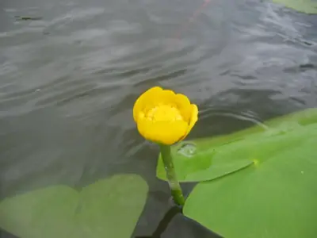

pranet · 出典付きの植物図鑑
セイヨウコウホネ
Nuphar lutea (L.) Sm. · Nymphaeaceae

セイヨウコウホネ は、スイレン科コウホネ属に属する水草の1種である。葉を水中と水面につけ（沈水葉と浮水葉）、浮水葉は長さ16–30センチメートル (cm)、葉柄の断面は三角形。花は黄色、カップ状で直径 3–6.5 cm、柱頭盤は円形（図1）。ヨーロッパからシベリア、西アジアなどに広く分布している。学名のうち、種小名の lutea はラテン語で「黄色」を意味し、花の色を示している。
出典: Wikipedia 日本語版「セイヨウコウホネ」 · CC BY-SA 4.0
異名: Nenuphar luteum Link, Nuphar affinis Harz, Nuphar fluviatile Laest., Nuphar grandiflora Laest., Nuphar grandifolia Laest., Nuphar graveolens Laest., Nuphar latifolia Laest., Nuphar lobata Laest., Nuphar rivularis Dumort., Nuphar sericea Láng, Nuphar spathulifera Rchb., Nuphar systyla Wallr., Nuphar tenella Rchb., Nymphaea affinis (Harz) Hayek, Nymphaea lutea L., Nymphaea umbilicalis Salisb., Nymphona lutea (L.) Bubani, Nymphozanthus affinis (Harz) Fernald, Nymphozanthus europaeus Desv., Nymphozanthus luteus Fernald
同定や利用は自己責任でお願いします。この図鑑だけを根拠に野生の植物を食べないでください。
出典
- 学名: World Flora Online Plant List 2026-06 · CC0 1.0
- 名前: Wikipedia の記事名と Wikidata · CC0 1.0（Wikidata）。記事名は事実
- 説明: Wikipedia 日本語版「セイヨウコウホネ」 · CC BY-SA 4.0
- 食用・毒性: World Checklist of Useful Plant Species (Diazgranados et al. 2020, RBG Kew) · CC BY 4.0
- 分布: World Checklist of Vascular Plants (WCVP), RBG Kew, version 2026-06-04 · CC BY 3.0
このページは pranet のデータから自動生成しています。コードは MIT、データは項目ごとのライセンス（説明）。